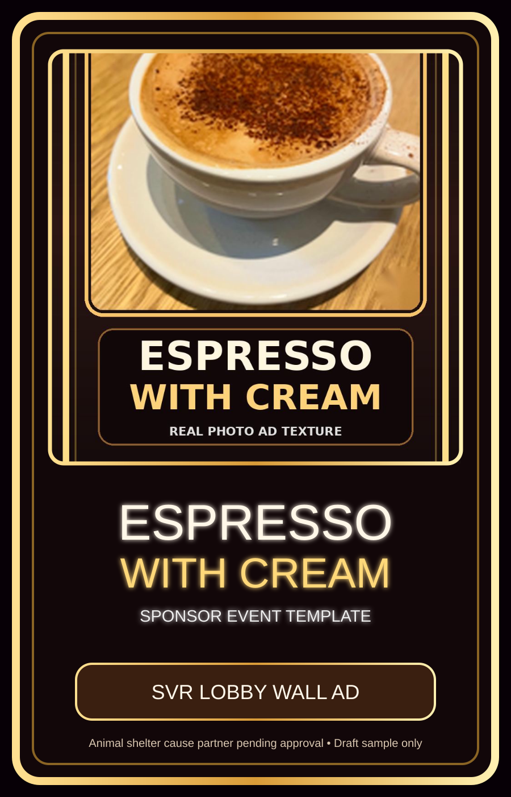
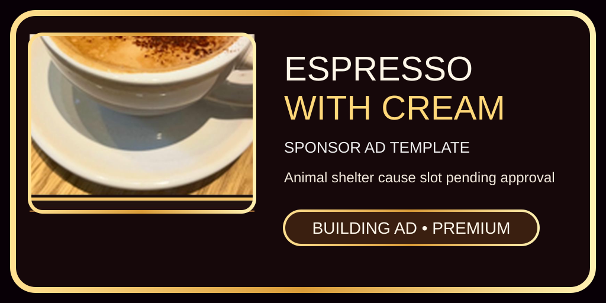

Site/Game 1.1 Sponsor Template
Espresso with Cream Sponsor Event
This is the first polished sponsor-event template for SVR. It demonstrates how a sponsor ad, in-game billboard, monthly campaign, and animal shelter cause slot can connect through the site, owner panel, database, and game billboard system.
Draft placeholder only. The animal shelter partner, sponsor terms, prize rules, and real-cash promotion language must be approved before public activation.
Building Ad Tier Assets
These assets define the reusable building ad tier sizes for future sponsors. Replace the artwork and data file each month without changing the whole site or game.
Premium Tier — 1024 × 512

Sponsor Event Workflow
1
Intake
Sponsor or cause partner submits request from the billboard page.
2
Owner Review
Admin checks artwork, sponsor details, disclosure, and cause partner information.
3
Approval
Approved campaign becomes the active monthly sponsor event data record.
4
Site Display
The site reads the current sponsor event data and displays active assets.
5
Game Display
The game billboard bridge can load the active banner into lobby/building placements.
6
Impact Report
Traffic, impressions, clicks, leads, and sponsor interest feed the owner dashboard.
Animal Shelter Cause Slot
This template reserves a cause area for an animal shelter campaign. The live shelter name should stay as Animal Shelter Partner Pending until the partner gives approval, the fundraising method is documented, and the owner approves the exact public language.
Real-cash prize events should not be published as poker gambling. Use sponsor-funded/no-purchase-required rules and legal review before promoting cash prizes.